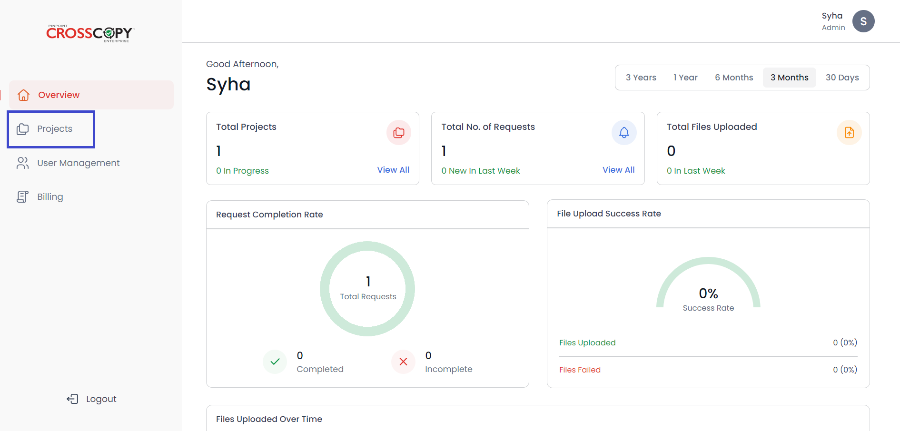
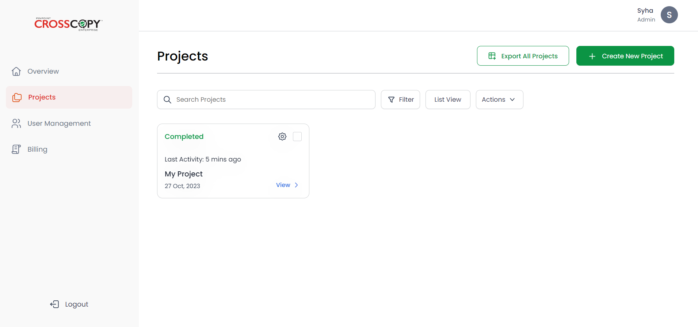
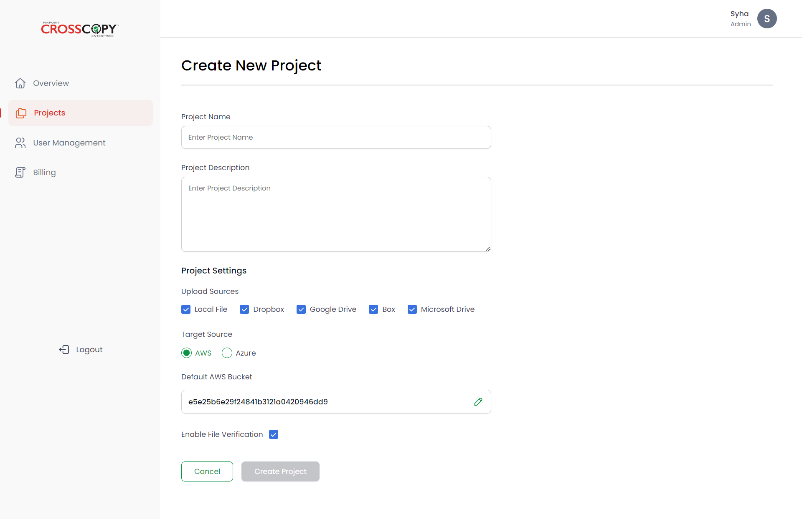

To create a new project, you will need to go to the Projects page. To access the Projects page, click on the Projects option from the navigation bar on the left-hand side.
You will see a similar screen.
Click on the Create New Project button in the top right corner to initiate a new project. A similar screen will appear.
Fill in all the required information, i.e.:
After you have added all the information, the Create Project button
will become active. Click on the button to create the project.
If
you wish to discard the project, click on the Cancel button to
cancel creating the project. No information will be saved in this case.
After you have successfully created your project, it will appear in
your Projects view with a status of Not Started indicating that it
currently does not have any custodians and hence no activity performed on
it.
For each project: